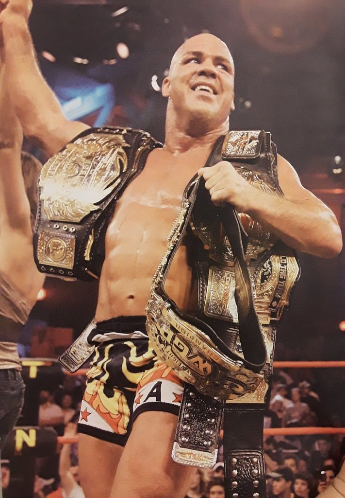
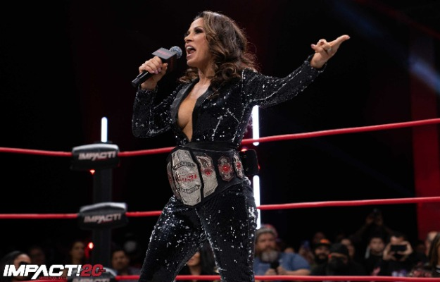
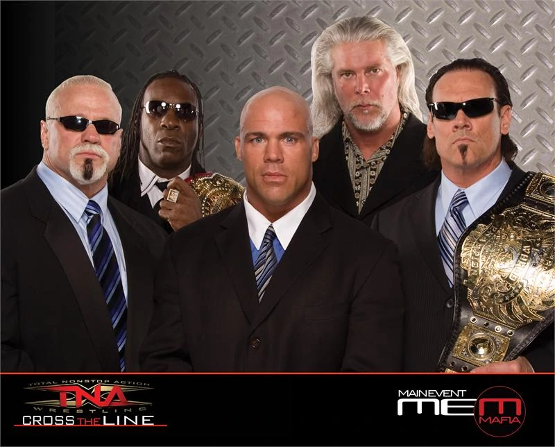
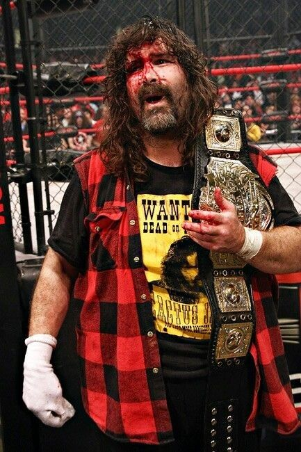

TNA GOAT.
Kurt Angle es uno de los talentos más completos que han pasado por las filas de WWE e Impact Wrestling, entre otras promociones. Tiene un gran conocimiento de la lucha libre y su opinión siempre es muy válida, sobre todo en cuanto a nivel técnico se refiere. El campeón olímpico fue invitado para aparecer en la penúltima edición del podcast Talk is Jericho de Chris Jericho, donde habló de varios temas de actualidad. Cuando Jericho le preguntó acerca de su experiencia con AJ Styles y quiénes son los mejores talentos de la actualidad, Kurt Angle señaló a dos luchadores en concreto. "Otro luchador que me recuerda a AJ es Kenny Omega. Mucho. Estos tipos están un paso por encima del resto", comentó Kurt Angle.
Mickie James carreando la empresa.
Hace varios instantes, WWE anunció en Friday Night SmackDown a 19 participantes de la batalla real femenina de Royal Rumble 2022. El evento del próximo 29 de enero contará con varios nombres actuales y algunos rostros del pasado. Uno de los que más hizo revuelo en redes sociales fue el de Mickie James, quien protagonizó un controversial despido de la empresa en abril del año pasado.
Main Event Mafia.
Formado en el 2008 en TNA, el grupo del Main Event Mafia fue la versión más reciente de la NWO para la empresa ese entonces y sorprendentemente, logró su meta un año después. El grupo logró dejar una buena impresión entre altas y bajas. Los indicios del grupo andaban desde Julio del 2008 cortesía de una historia donde Sting, sin estar presente, parecía ayudar a los veteranos Scott Steiner, Booker T, Kevin Nash y Kurt Angle en derrotar a los jovenes como Samoa Joe y AJ Styles. Cuando llega Bound For Glory 2008 y Sting logra destronar a Samoa Joe, el grupo se forma con la idea que “los jóvenes no respetan los veteranos”. En Octubre 23, 2008, en un episodio especial de Impact! desde el Hard Rock Casino de Las Vegas, el grupo se denomina el “Main Event Mafia” y hacen sus intenciones claras.
Foleys last run.
En la más reciente edición de su video podcast, Foley is Pod, el Miembro del Salón de la Fama WWE, Mick Foley, habló con lujo de detalles de cómo se dio su regreso a WWE en 2012, luego de una gran etapa en Impact Wrestling (TNA). Foley aseguró que una de las principales.
